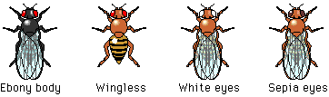

Week One
Your instructor will give you a vial containing both male and female flies. This is the parental generation. Study them carefully with a dissecting microscope or lens. Some of your flies will be of the wild type (showing the normal phenotype) and others may show various mutations (genetic variations from the wild type), such as those illustrated below.

When eggs and larvae appear, remove the adult flies from the vial.
|
Why is it important to remove the adults? |
 Continue to the F1 and F2 Generations.
Continue to the F1 and F2 Generations.